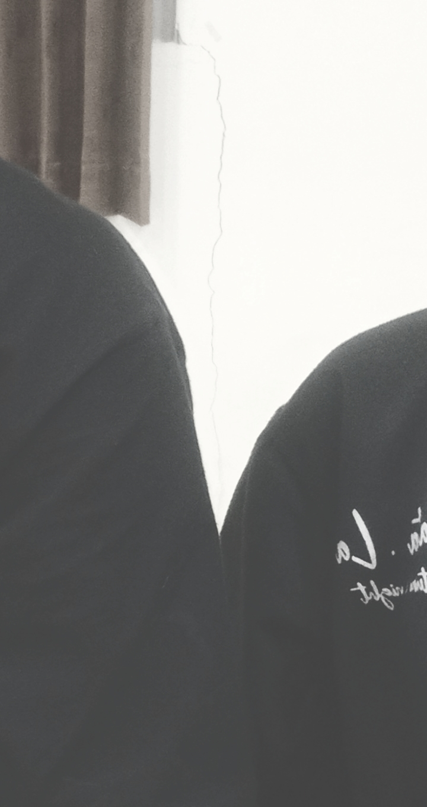

Gak kerasa yaa, kita udah hampir 1 tahun bareng bareng. Banyak cerita yang kita buat, banyak hal dan momen yang gak bisa aku lupa. Aku sangat beruntung punya kamu sekarang.
Kamu laki laki yang baik. Kepribadian kamu buat aku ngerasa nyaman sama kamu. Kamu selalu sabar sama aku, selalu ada dan berusaha ngasih yang terbaik buat aku dan selalu buat aku ketawa. Setiap hari aku jadi lebih berwarna. Sejak ada kamu, aku lebih semangat mau ngerjain sesuatu. Contoh kecil aja, aku jadi lebih semangat bangun tidur. Biar bisa sapa ataupun disapa sama kamu pagi pagi hehe.
Aku minta maaf yaa sama kamu. Kalau kadang sikap aku buat kamu bingung. Maaf kalau kadang aku pernah cemburu, rewel, tiba tiba sedih, tiba tiba pengen manja sama kamu. Semua itu terjadi karena aku udah nyaman dan gak mau kehilangan kamu. Maaf juga yaa kalau selama ini masih ada yang kurang dari aku. Aku pasti akan terus belajar dan berusaha untuk jadi yang terbaik buat kamuu. Aku janji, dan tolong bantu arahin aku yaa.
Aku sayang sama kamuu. Apa yang aku rasain ini, tulus. Aku mau jadi orang yang nemenin kamu di setiap proses yang kamu lalui. Kekurangan dan kelebihan kamu adalah hal yang udah aku terima dengan senang hati.
Jangan tanya kenapa, karena rasa ini adalah takdir dan bersamamu adalah pilihanku.
I Love You Bandell, Tuan Editor, Bayi Gedee, Dudu, Gus DJ Sayang dan kamu dengan segala panggilan sayangkuu>